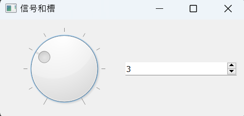
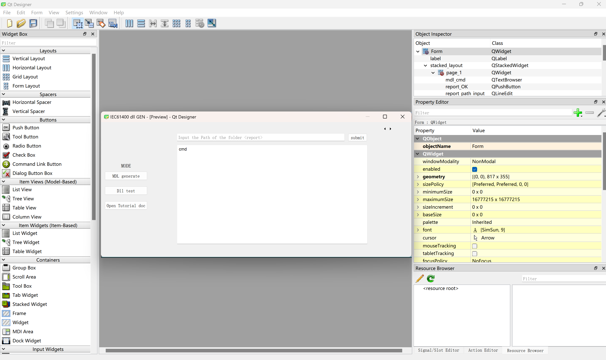

PyQt 学习笔记
PyQt-学习笔记
1. 安装
别忘了基于conda环境进行安装，提前分配一个虚拟环境：1
conda create -n qt-dev python=3.12.4
然后再qt-dev环境下pip就行了：1
pip install pyqt5
2. 基本语法
基本模块有：
- QtCore:包含了核心的非GUI的功能。主要和时间、文件与文件夹、各种数据、流、URLs、mime类文件、进程与线程一起使用
- QtGui:包含了窗口系统、事件处理、2D图像、基本绘画、字体和文字类
- QtWidgets:包含了一些列创建桌面应用的UI元素
基本模板为：1
2
3
4
5
6
7
8
9
10
11
12import sys
from PyQt5.QtWidgets import QApplication, QWidget
if __name__ == '__main__':
app = QApplication(sys.argv)
w = QWidget()
# 设置窗口标题
w.setWindowTitle("第一个PyQt")
# 展示窗口
w.show()
# 程序进行循环等待状态
app.exec()
注意此时这里，app与QApplication(sys.argv)的使用是必备的，app.exec()意味着Qt的GUI激活，直到关闭窗口，程序才结束。w = QWidget()是简化的窗口内容定义，之后可采用class Mywindow(QWidget())进行详细操作后再w = Mywindow()的方法进行详细操作。
常用的一些基本函数有：
- 按钮对应的控件名称为
QPushButton，位于 PyQt5.QtWidgets里面 - 纯文本控件名称为
QLabel， 位于PyQt5.QtWidgets里面 - 输入框的控件名称为
QLineEdit， 位于PyQt5.QtWidgets里面 - 以及
w.resize(*arg),center_pointer = QDesktopWidget().availableGeometry().center(),w.move(x, y),w.setWindowIcon(QIcon('panda.png'))等方法。
注意w.move(x, y)方法中，x,y仅仅对应GUI左上角，而非GUI中心的位置。可用以下方法实现居中：1
2
3
4
5
6# 调整窗口在屏幕中央显示
center_pointer = QDesktopWidget().availableGeometry().center()
x = center_pointer.x()
y = center_pointer.y()
old_x, old_y, width, height = w.frameGeometry().getRect()
w.move(int(x - width / 2), int(y - height / 2))
3. 布局
3.1 基本布局器语法
在Qt里面布局分为四个大类 ：
QBoxLayout: 一般使用它的两个子类QHBoxLayout和QVBoxLayout负责水平和垂直布局QGridLayout: 网格布局QFormLayout: 一般适用于提交数据form表单, 比如: 登录，注册类似的场景QStackedLayout: 抽屉布局, 提供了多页面切换的布局，一次只能看到一个界面
此时一个重要的起始模板：1
2
3
4
5
6
7class MyWindow(QWidget):
def __init__(self):
# 切记一定要调用父类的__init__方法，因为它里面有很多对UI空间的初始化操作
super().__init__()
layout = QVBoxLayout() # 创建布局器对象，此处以垂直布局为例
... # 具体的布局规范
self.setLayout(layout) # 添加布局器对象
之后对于Mywindow的集成也很好办，譬如说：1
super(MyWindow).__init__()
或者1
2
3class KidWindow(MyWindow):
def __init__(self):
super().__init__()
一个简单的例子：1
2
3
4
5
6
7
8
9
10
11
12
13
14
15
16
17
18
19
20
21
22
23
24
25
26
27
28
29
30
31
32
33
34
35
36
37
38
39
40
41
42
43
44
45
46
47
48
49
50
51
52
53
54import sys
from PyQt5.QtWidgets import QApplication, QVBoxLayout, QWidget, QPushButton, QGroupBox, QMainWindow
from PyQt5.QtCore import Qt
class MyWindow(QWidget):
def __init__(self):
# 切记一定要调用父类的__init__方法，因为它里面有很多对UI空间的初始化操作
super().__init__()
# 设置大小
self.resize(300, 300)
# 设置标题
self.setWindowTitle("垂直布局")
# 垂直布局
layout = QVBoxLayout()
# 作用是在布局器中增加一个伸缩量，里面的参数表示QSpacerItem的个数，默认值为零->default 为空
# 会将你放在layout中的空间压缩成默认的大小
layout.addStretch(1)
# 按钮1
btn1 = QPushButton("按钮1")
# 添加到布局器中
# layout.addWidget(btn1, Qt.AlignmentFlag.AlignTop)
layout.addWidget(btn1)
layout.addStretch(1)
# 按钮2
btn2 = QPushButton("按钮2")
# 添加到布局器
layout.addWidget(btn2)
layout.addStretch(1)
# 按钮3
btn3 = QPushButton("按钮3")
# 添加到布局器
layout.addWidget(btn3)
layout.addStretch(2)
self.setLayout(layout)
if __name__ == '__main__':
app = QApplication(sys.argv)
# 创建一个QWidget子类
w = MyWindow()
w.show()
app.exec()
注意此处，layout.addStretch()类似于一个弹簧，用来填补对应两个按钮之间的空白。注意，同一个布局器内，弹簧的长度是相对长度，而不是绝对长度。
3.2 布局器的嵌套
1 | class MyWindow(QWidget): |
以及基于QGridLayout的嵌套布局：1
2
3
4
5
6
7
8
9
10
11
12
13
14
15
16
17
18
19
20
21
22
23
24
25
26
27
28
29
30
31
32
33
34
35
36def init_ui(self):
self.setWindowTitle("计算器")
# 准备数据
data = {
0: ["7", "8", "9", "+", "("],
1: ["4", "5", "6", "-", ")"],
2: ["1", "2", "3", "*", "<-"],
3: ["0", ".", "=", "/", "C"]
}
# 整体垂直布局
layout = QVBoxLayout()
# 输入框
edit = QLineEdit()
edit.setPlaceholderText("请输入内容")
# 把输入框添加到容器中
layout.addWidget(edit)
# 网格布局
grid = QGridLayout()
# 循环创建追加进去
for line_number, line_data in data.items():
# 此时line_number是第几行，line_data是当前行的数据
for col_number, number in enumerate(line_data):
# 此时col_number是第几列，number是要显示的符号
btn = QPushButton(number)
# grid.addWidget(btn)
grid.addWidget(btn, line_number, col_number)
# 把网格布局追加到容器中
layout.addLayout(grid)
self.setLayout(layout)
表单布局QFormLayout：1
2
3
4
5
6
7
8
9
10
11
12
13
14
15
16
17
18
19
20
21
22
23
24
25
26
27
28
29
30
31
32
33
34def init_ui(self):
# 设定当前Widget的宽高(可以拉伸大小)
# self.resize(300, 200)
# 禁止改变宽高（不可以拉伸）
self.setFixedSize(300, 150)
# 外层容器
container = QVBoxLayout()
# 表单容器
form_layout = QFormLayout()
# 创建1个输入框
edit = QLineEdit()
edit.setPlaceholderText("请输入账号")
form_layout.addRow("账号：", edit)
# 创建另外1个输入框
edit2 = QLineEdit()
edit2.setPlaceholderText("请输入密码")
form_layout.addRow("密码：", edit2)
# 将from_layout添加到垂直布局器中
container.addLayout(form_layout)
# 按钮
login_btn = QPushButton("登录")
login_btn.setFixedSize(100, 30)
# 把按钮添加到容器中，并且指定它的对齐方式
container.addWidget(login_btn, alignment=Qt.AlignRight)
# 设置当前Widget的布局器，从而显示这个布局器中的子控件
self.setLayout(container)
以及抽屉布局QStackedLayout：1
2
3
4
5
6
7
8
9
10
11
12
13
14
15
16
17
18
19
20
21
22
23
24
25
26
27
28
29
30
31
32
33
34
35
36
37
38
39
40
41
42
43
44
45
46
47
48
49
50
51
52
53
54
55
56
57
58
59
60
61
62
63
64class Window1(QWidget):
def __init__(self):
super().__init__()
QLabel("我是抽屉1要显示的内容", self)
self.setStyleSheet("background-color:green;")
class Window2(QWidget):
def __init__(self):
super().__init__()
QLabel("我是抽屉2要显示的内容", self)
self.setStyleSheet("background-color:red;")
class MyWindow(QWidget):
def __init__(self, parent=None):
super().__init__(parent)
self.create_stacked_layout()
self.init_ui()
def create_stacked_layout(self):
# 创建堆叠(抽屉)布局
self.stacked_layout = QStackedLayout()
# 创建单独的Widget
win1 = Window1()
win2 = Window2()
# 将创建的2个Widget添加到抽屉布局器中
self.stacked_layout.addWidget(win1)
self.stacked_layout.addWidget(win2)
def init_ui(self):
# 设置Widget大小以及固定宽高
self.setFixedSize(300, 270)
# 1. 创建整体的布局器
container = QVBoxLayout()
# 2. 创建1个要显示具体内容的子Widget
widget = QWidget()
widget.setLayout(self.stacked_layout)
widget.setStyleSheet("background-color:grey;")
# 3. 创建2个按钮，用来点击进行切换抽屉布局器中的Widget
btn_press1 = QPushButton("抽屉1")
btn_press2 = QPushButton("抽屉2")
# 给按钮添加事件（即点击后要调用的函数）
btn_press1.clicked.connect(self.btn_press1_clicked)
btn_press2.clicked.connect(self.btn_press2_clicked)
# 4. 将需要显示的空间添加到布局器中
container.addWidget(widget)
container.addWidget(btn_press1)
container.addWidget(btn_press2)
# 5. 设置当前要显示的Widget，从而能够显示这个布局器中的控件
self.setLayout(container)
def btn_press1_clicked(self):
# 设置抽屉布局器的当前索引值，即可切换显示哪个Widget
self.stacked_layout.setCurrentIndex(0)
def btn_press2_clicked(self):
# 设置抽屉布局器的当前索引值，即可切换显示哪个Widget
self.stacked_layout.setCurrentIndex(1)
抽屉布局的一个直观应用：微信在点击不同好友时的聊天视窗切换。
4. 窗口
在Qt中，生成窗口有三种方式：
QWidget: 控件和窗口的父类 ，自由度高（什么都东西都没有），没有划分菜单、工具栏、状态栏、主窗口 等区域QMainWindow: 是QWidget的子类，包含菜单栏，工具栏，状态栏，标题栏等，中间部分则为主窗口区域QDialog: 对话框窗口的基类（也就是弹窗）
其中QMainWindow的例子：1
2
3
4
5
6
7
8
9
10
11
12
13
14
15
16
17
18
19
20
21
22def init_ui(self):
label = QLabel("这是文字~~")
label.setStyleSheet("font-size:30px;color:red")
# 调用父类中的menuBar，从而对菜单栏进行操作
menu = self.menuBar()
# 如果是Mac的话，菜单栏不会在Window中显示而是屏幕顶部系统菜单栏位置
# 下面这一行代码使得Mac也按照Windows的那种方式在Window中显示Menu
menu.setNativeMenuBar(False)
file_menu = menu.addMenu("文件")
file_menu.addAction("新建")
file_menu.addAction("打开")
file_menu.addAction("保存")
edit_menu = menu.addMenu("编辑")
edit_menu.addAction("复制")
edit_menu.addAction("粘贴")
edit_menu.addAction("剪切")
# 设置中心内容显示
self.setCentralWidget(label)
5. 信号(Signal)与槽(Slot) :star2:
5.1 基本流程
信号与槽的工作原理如图：
实现为：
1 | object.signal_name.connect(slot_function_name) |
1 | class MyWindow(QWidget): |
1 | class MyWindow(QWidget): |

6. Qt Designer
Qt Designer的本质是通过图形化实现更高效的前端设计和信号流搭建。

通过可视化工具设计好每个控件的主要特性与 object_name, 之后就可以在代码里快速调用了。这里实现了一个建议的 stacked_layout：
1 | def init_ui(self): |
注意在 if __name__ == '__main__' 中需要额外添加一行：
1 | QCoreApplication.setAttribute(Qt.AA_EnableHighDpiScaling) |
确保在Qt Designer中配置好的几何参数保持原样，从而代码实现的GUI与软件中设计的保持一致。